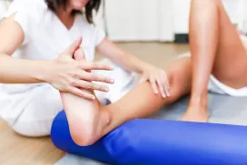
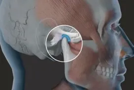
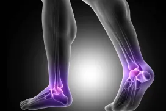
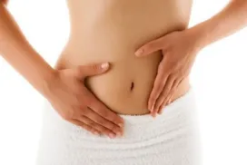

Fisioterapia
Fisioterapia Cardiorrespiratória
Utiliza estratégias, meios e técnicas de avaliação e tratamento não invasivas, que têm como objetivo a otimização do transporte de oxigênio, contribuindo assim para prevenir, reverter ou minimizar ...
Fisioterapia Oncológica
A fisioterapia oncológica proporciona qualidade de vida a pacientes com câncer antes, durante e depois do tratamento. É indicada tanto para quem foi diagnosticado com a doença, mas não foi ...

Fisioterapia Esportiva
A fisioterapia esportiva é um componente da medicina esportiva, sua prática e métodos são aplicados no caso de lesões causadas por esportes, com o propósito de recuperar e prevenir as ...

Fisioterapia Geriátrica
Objetiva a promoção, manutenção e recuperação da saúde do idoso, em todas as áreas de atuação do fisioterapeuta. Como consequência das principais alterações biológicas ocorridos pelo ...
Fisioterapia nas disfunções da ATM
Cada vez mais os serviços de odontologia são procurados pela presença de dores, porém muitas dessas dores não são de origem dentária, mas sim devido a desordens temporomandibulares ...
Fisioterapia Neurológica
É uma especialidade que trata as doenças que envolvem os sistemas nervoso e central e acometem crianças e adultos. Esse tipo de fisioterapia é indicado para pacientes com paralisia ...
Fisioterapia Traumato-Ortopédica
Visa tratar disfunções osteomioarticulares e tendíneas resultantes de traumas e suas consequências imediatas e tardias, lesões por esforços repetitivos, patologias ...
Fisioterapia Urogenital
A incontinência urinária (IU) é definida como sendo qualquer perda involuntária de urina. A IU mais comum é a de esforço caracterizada pela perda involuntária de urina ao ...